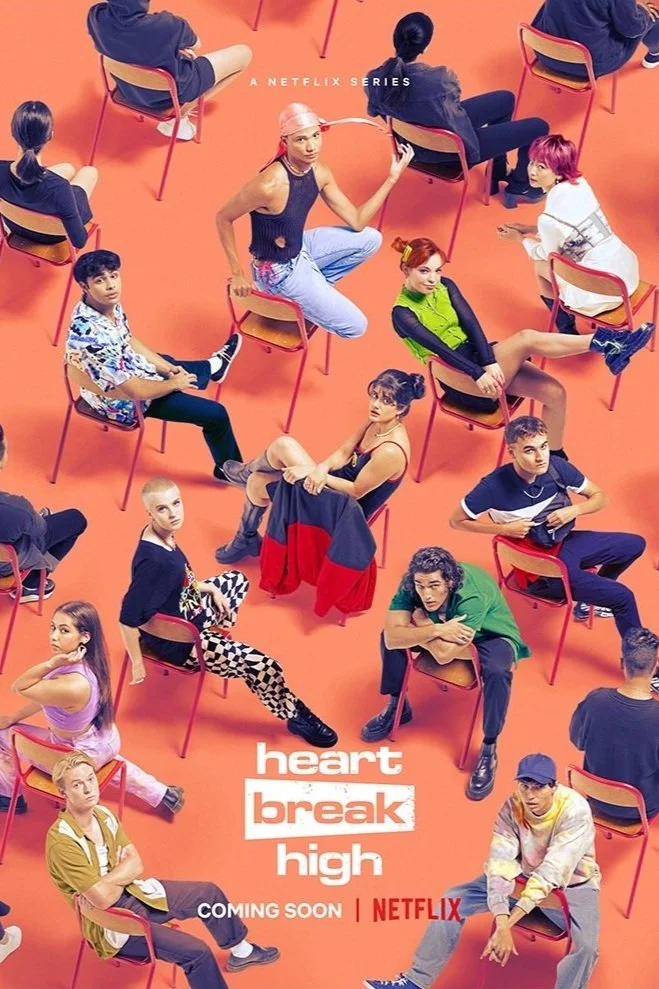

The rebooted Heartbreak High returns for Season 2 — back at Hartley High with Amerie navigating reputation, love, and the chaos of adolescence. The season debuted on Netflix in 2024, spending three weeks in Netflix's global Top 10 and accumulating 50 million viewing hours.
Shot in Sydney, the series called on Future Associate for a centrepiece VFX sequence in episode eight — a pyrotechnic set piece that had to look fully convincing on screen.
Future Associate delivered the fire and smoke sequences for episode eight — a blend of practical and digital effects designed to be photorealistic under close scrutiny. CG smoke was camera-tracked and rebuilt in 3D, with virtual pyrotechnics and flame generated using EmberGen particle simulation.
The standout shot: the "Flaming Richard" — a phallic shape burned into the schoolyard, built from hand-drawn guides animated in Houdini and composited with digital fire to sell it as a fully practical effect.